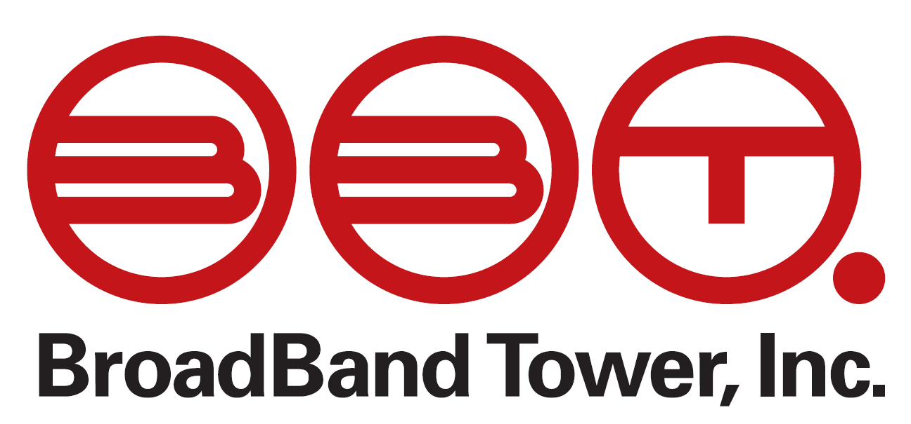
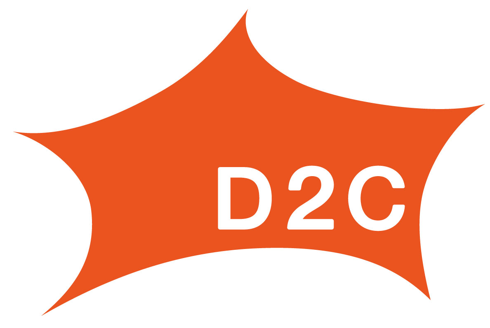
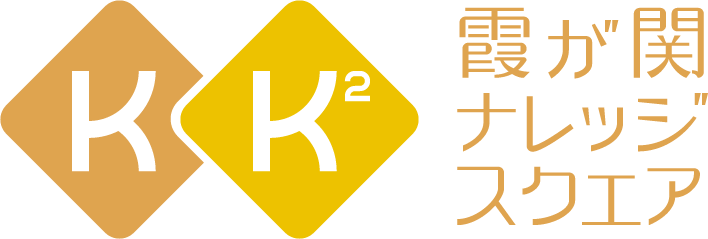
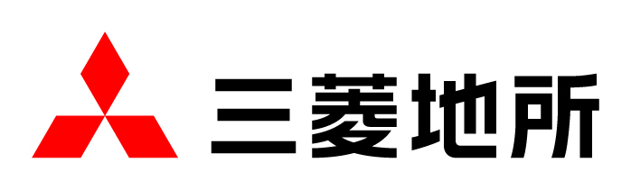
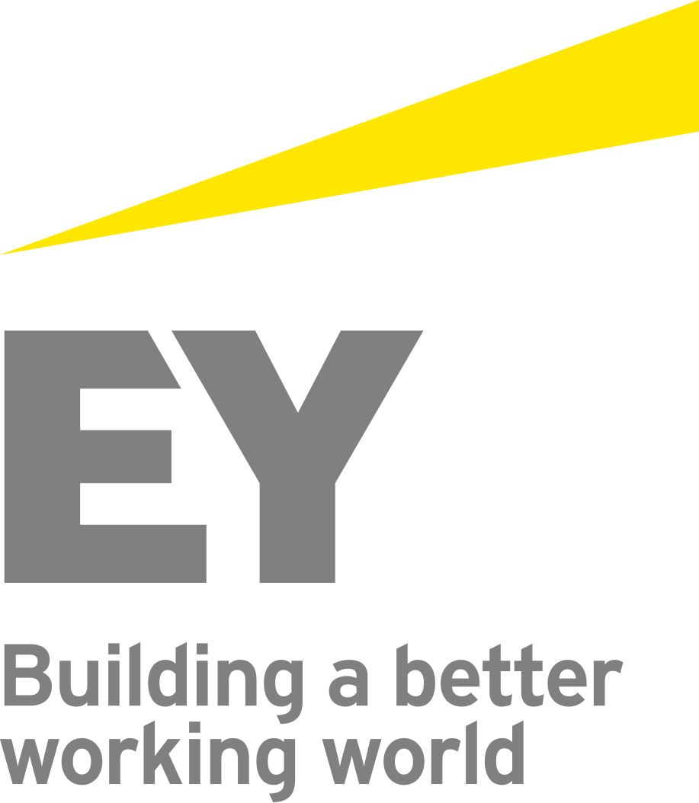
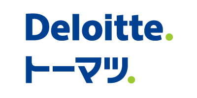

KBC Organization Team
Business Leverage
開会
13:00
基調講演・鼎談
創業者と語る"XICA"の軌跡
13:15
報告プレゼンテーション
14:30
デモンストレーション
17:00
表彰式
17:45
閉会
18:10
懇親会
18:30
協賛組織 |
|||||||||||
 |
 | ||||||||||
| 株式会社 エー・アイ・ピー |
アーキタイプ株式会社 | 株式会社ブロードバンドタワー | |||||||||
|  |  | ||||||||||
| 株式会社D2C | 株式会社 ディー・ティー・ピー |
一般財団法人 高度映像情報センター |
|||||||||
|  | |||||||||||
| ラーニングエッジ株式会社 | 三菱地所株式会社 | 株式会社三技協 | |||||||||
|  |  |  |
|||||||||
| 新日本有限責任監査法人 | 有限責任監査法人 トーマツ |
ウェブリオ株式会社 | 株式会社野心満々 | ||||||||
後援組織 |
メンター三田会 |
情報産業三田会 |
慶應藤沢イノベーションビレッジ |
MMインキュベーションパートナーズ株式会社 |
共催 |
慶應SFC イノベーション＆アントレプレナーシップ |
基調講演
XICA CEO 平尾喜昭氏
1987年生まれ。大学在籍時、竹中平蔵から学んだ"統計分析"に魅力を感じ、2012年の卒業と同時にサイカを創業。
統計分析のプロではなく、マーケッターなど、実務のプロのために作った統計分析Webアプリ「adelie (アデリー)」を展開する。
なお、元々はミュージシャンを目指し、日韓で音楽活動を行っていたという異色の経歴も持つ。
TechCrunch startup battle 2013 Microsoft賞
Young Entrepreneur Award 2013 最優秀賞